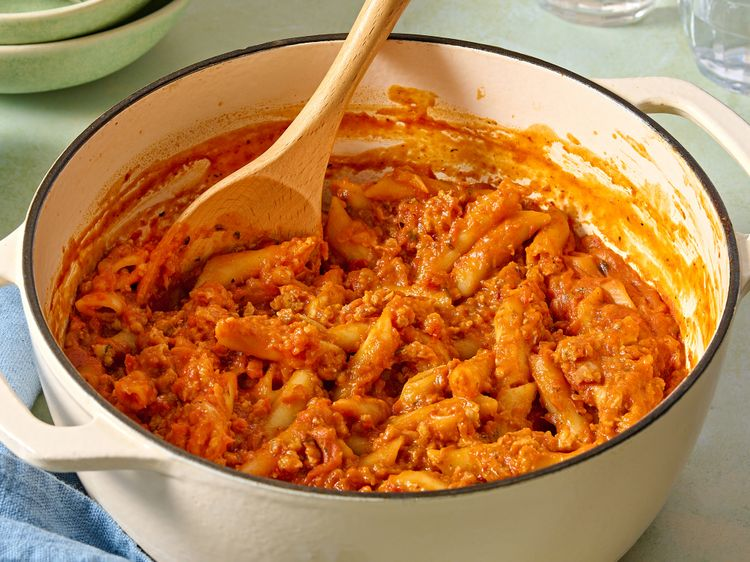

One-Pot Tomato Sausage Pasta

Description
This one-pot tomato sausage pasta could not be more family-friendly. It features minimal prep and cleanup, and is ready in well under an hour. Simmering the pasta directly in marinara sauce makes a thick, hearty dish.
Ingredients
- 1 tablespoon salted butter
- 11 tablespoon olive oil
- 11/2 white onion, minced
- 13 cloves garlic, minced
- 11 pound mild Italian sausage
- 12 tablespoons red wine
- 11 (24 ounce) jar marinara sauce, such as Mutti's®
- 18 ounces penne pasta
- 12 cups hot water
- 1salt and freshly ground black pepper to taste
- 1grated Parmesan cheese (optional)
Directions
- Gather all ingredients. Melt butter with olive oil in a large heavy sauce pot or non-reactive Dutch oven over medium-low heat.
- Add onion and cook, stirring frequently until soft, about 5 minutes. Add garlic and stir just until fragrant. Add sausage and cook, breaking up with spatula, until browned, about 5 minutes.
- Deglaze the pan with wine and stir to incorporate. Mix in marinara sauce. Bring to a simmer and simmer gently for about 5 minutes.
- Stir dry pasta into simmering sauce and cook 5 minutes more, then pour in 1 cup water. Test pasta for doneness; stir in remaining water.
- Continue to simmer and stir frequently to prevent pasta sticking to the bottom of the pot. Test the pasta and cook until done to your liking.
- Serve in a wide bowl with a sprinkling of cheese.
Home